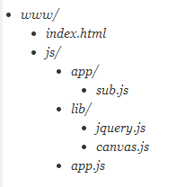

前言
进入移动前端是很不错的选择，这块也是我希望的道路，但是不熟悉啊。。。
现在项目用的是require+backbone，整个框架被封装了一次，今天看了代码搞不清楚，觉得应该先从源头抓起，所以再看看require了。
上午是到处搜集的资料，下午我们来看原生的API吧：
http://www.requirejs.org/docs/api.html#config
PS：我英语很烂，各位将就着看吧，看到红色就说明老夫拿不准......
加载javascript文件
RequireJS采用不同的方法来加载脚本，他鼓励模块化编程，使用RequireJS编程不但可以模块化编程而且他依旧可以运行的很快。
RequireJS鼓励使用模块ID，而不是像原来那样使用script标签使用url引入。
RequireJS加载代码时候，其相对路径为baseUrl，baseUrl通常被设置为data-main指定文件的目录：
<!--这里讲baseUrl设置为script的话，scripts/main.js便可以写成main了--> <script data-main="scripts/main.js" src="scripts/require.js"></script>
BaseUrl也可以通过设置进行手动配置（通过RequireJS 的 config进行配置），若是没在config中进行配置，并且script标签没有指定data-main的话，那么默认目录为引入requireJS的HTML页面目录。
默认情况下不要在模块id上加上.js后缀，requireJS会在运行时自己加上。
通过设置config中的paths（对象字面量）属性，你能设置一组脚本的位置，如此便能减少我们的js总体配置。
这里我们来举个例子，且看我们的文档目录：

我们index代码：
<script data-main="js/app.js" src="js/require.js"></script>
app.js为入口函数，其代码为：
requirejs.config({ //默认情况下模块所在目录为js/lib baseUrl: 'js/lib', //当模块id前缀为app时，他便由js/app加载模块文件
//这里设置的路径是相对与baseUrl的，不要包含.js paths: { app: '../app' } }); // 开始逻辑. requirejs(['jquery', 'canvas', 'app/sub'], function ($, canvas, sub) { //jQuery, canvas and the app/sub module are all //loaded and can be used here now. });
各位请注意，这里的jquery并没有在他们的文件名上加上其版本号，这里推荐加上。
PS：原因我就不说了，说也不一定说得清楚......
理想情况下我们加载的脚步都会通过define()函数定义，但是我们有些脚步会依赖与当前版本不同的版本，你能使用shim配置，来表达其依赖。
PS：这里有点模糊，我们再来看看snandy道友是怎么说的：
shim参数解决了使用非AMD方式定义的模块（如jQuery插件）及其载入顺序。
使用shim参数来取代1.0版本的order插件。其实在1.0版本中就曾经有人开发过use和wrap插件来解决此类问题。
考虑到很多开发者有此类需求（比如某些JS模块是较早时候其他人开发的，非AMD方式）此次2.0版本直接将其内置其中。
这里是一个使用jQuery插件形式配置的参数，我们知道jQuery插件本质是将命名空间挂在全局jQuery或jQuery.fn上，而非使用define定义的模块。
jQuery插件皆依赖于jQuery，即在require插件时得保证jQuery先下载：
1 require.config({ 2 shim: { 3 'jquery-slide': ['jquery'] 4 } 5 }); 6 require(['jquery-slide']);
这里便会保证先加载jquery再加载插件。
PS：对照着园友的解释看看吧，应该会清晰一点，这块后面还会有我们等下再看。
模块定义
requireJS定义模块与传统一个很大的不同是他可以保证其定义的变量处于某个范围内，从而避免了全局命名污染。
他能明确的罗列出其依赖，并且在那些依赖上找到处理办法，而不是必须对那些依赖指定全局变量。
requireJS的模块扩展不需要全局变量与其他模块产生依赖（理解的狗屁不通啊）
PS：文字读不懂，来一个简单的键值对例子吧：
define({ color: "black", size: "unisize" });
若是这个模块没有任何依赖，并且他仅仅是一组键值对，那么就传递一个对象就好。
定义函数
//my/shirt.js now does setup work //before returning its module definition. define(function () { //Do setup work here return { color: "black", size: "unisize" } });
若是模块没有依赖，但是需要用一个函数做一些初始化工作，然后定义自己通过define的匿名函数。
有依赖的模块
//my/shirt.js now has some dependencies, a cart and inventory //module in the same directory as shirt.js define(["./cart", "./inventory"], function(cart, inventory) { //return an object to define the "my/shirt" module. return { color: "blue", size: "large", addToCart: function() { inventory.decrement(this); cart.add(this); } } } );
若是模块具有依赖关系，第一个参数应该是一个数组，其项目为依赖名字，第二个参数是匿名函数
匿名函数在依赖项加载结束后会立即加载，函数会返回一个对象用以定义这个模块。
前面的依赖项将以参数的形式传递给函数，顺序与之前一致。
再看我们的例子，一个球衣模块被创建了（我们返回的是一个衣服模块）
PS：这里文件命名为shirt.js，所以返回的就是衣服模块了
最后我们得到的结构式这样的：
- my/cart.js
- my/inventory.js
- my/shirt.js
参数调用时的参数与前面依赖项一一对应，
定义函数模块
//A module definition inside foo/title.js. It uses //my/cart and my/inventory modules from before, //but since foo/bar.js is in a different directory than //the "my" modules, it uses the "my" in the module dependency //name to find them. The "my" part of the name can be mapped //to any directory, but by default, it is assumed to be a //sibling to the "foo" directory. define(["my/cart", "my/inventory"], function(cart, inventory) { //return a function to define "foo/title". //It gets or sets the window title. return function(title) { return title ? (window.title = title) : inventory.storeName + ' ' + cart.name; } } );
模块也可以不必返回对象，任何有效的返回都是可以的，比如上面的例子，返回一个函数作为其模块定义。
带名字的模块
//Explicitly defines the "foo/title" module: define("foo/title", ["my/cart", "my/inventory"], function(cart, inventory) { //Define foo/title object in here. } );
（？？？）这里明确的定义了foo/title模块，这里其实是一种优化手段，我们这里可以明确的命名模块，但是若是文件目录变化我们就要更改名称了。
其他说明
一个js文件应该只定义一个模块，并与文件目录一致，因为最后有个神马优化工具可以优化。。。
在定义模块时将各个模块关联起来，
相对模块生产url，你可能需要使用一个相对模块的url：
define(["require"], function(require) { var cssUrl = require.toUrl("./style.css"); });
PS：尼玛，我今天才知道我英语有多差。。。
循环依赖
我们有时候会定于循环依赖的模块，比如a需要b并且b需要a，在这个情况下当b模块调用时他将会从a获得一个undefined值，b可以通过require方法取得一个比较晚的模块。
//Inside b.js: define(["require", "a"], function(require, a) { //"a" in this case will be null if a also asked for b, //a circular dependency. return function(title) { return require("a").doSomething(); } } );
你通常不需要使用require方法获取一个模块，在循环依赖时候需要用到（读不懂了。。。）
exports
//Inside b.js: define(function(require, exports, module) { //If "a" has used exports, then we have a real //object reference here. However, we cannot use //any of a's properties until after b returns a value. var a = require("a"); exports.foo = function () { return a.bar(); }; });
//Inside b.js: define(['a', 'exports'], function(a, exports) { //If "a" has used exports, then we have a real //object reference here. However, we cannot use //any of a's properties until after b returns a value. exports.foo = function () { return a.bar(); }; });
配置选项
我们可以通过以下方法，对require进行配置：
<script src="scripts/require.js"></script> <script> require.config({ baseUrl: "/another/path", paths: { "some": "some/v1.0" }, waitSeconds: 15 }); require( ["some/module", "my/module", "a.js", "b.js"], function(someModule, myModule) { //This function will be called when all the dependencies //listed above are loaded. Note that this function could //be called before the page is loaded. //This callback is optional. } ); </script>
baseUrl
模块查找的根目录，默认情况与data-main所赋值处于同一目录
paths
该项用于配置那些不在baseUrl下的模块，这个指定的path假定是baseUrl的相对路径，若是以/开头的话就不是了。
这里的id会自动加上.js，我们要获取一个路径时，一般这个样子干：
require.toUrl()
shim
传统浏览器的全局脚本不使用define去声明依赖关系和模块设置值的依赖。
Ps：读不懂，还是看代码算了：
requirejs.config({ shim: { 'backbone': { deps: ['underscore', 'jquery'], exports: 'Backbone' }, 'underscore': { exports: '_' }, 'foo': { deps: ['bar'], exports: 'Foo', init: function (bar) { return this.Foo.noConflict(); } } } }); define(['backbone'], function (Backbone) { return Backbone.Model.extend({}); });
这个例子假定backbone等依赖库已经在baseUrl中，若是没有就需要配置。
requirejs.config({ shim: { 'jquery.colorize': { deps: ['jquery'], exports: 'jQuery.fn.colorize' }, 'jquery.scroll': { deps: ['jquery'], exports: 'jQuery.fn.scroll' }, 'backbone.layoutmanager': { deps: ['backbone'] exports: 'Backbone.LayoutManager' } } });
结语
读不下去啦，暂时这样吧。。。。。。